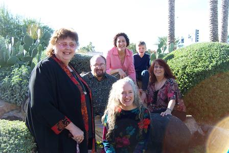

|
What happened with the Sharps this
year?
Julie and Dave still live in Tempe. They got two golden
retrievers this summer: Haley, a four-year-old female, and
Comet, a male puppy. (Lucky Dog was almost 12 years old when
she passed away earlier this year.) Comet is now taller than
Haley but is still very puppyish.
Julie works at Hayden Library at ASU in Tempe and Dave
works at Broadcom. Julie
has a Masters Degree in English Literature and has almost
completed her Masters in Library Sciences.
Dad now lives in Sun City and keeps very busy going to
see music shows and going dancing. In fact, Dad's often out on
the town at night while the kids are home doing boring things.
Mom still lives in Florida and came to visit us this
year, redecorating rooms for us during her visit. Mom has
retired from Interior Design but still fixes up and sells her
own homes.
Steve and Tanya have been going to ASU West. Tanya
finished her breast cancer treatments and surgeries in June
and is really happy about starting a new job at the American
Cancer Society in January. Steve and Tanya started a club at
ASU West called CARE, for Cancer Awareness, Resources, and
Education. They've been organizing a Relay for Life that
will be at ASU West the first weekend in March. We've been
amazed to find that everyone we know has been touched by
cancer in some way, so the relay is Steve and Tanya's way of
contributing to improve the outlook for all cancer patients.
Join our team or make a donation to the ACS!
Steve and Tanya are both going for degrees in
Communications and have both been doing excellent in school. Tanya
is specializing in Event Management and really enjoys it. Steve
has had some serious short-term memory problems, caused by
Lipitor, that are taking a long time to clear up and and are
making school extra difficult. He will be seeing a specialist
about that in January. Tanya only has four more classes to go,
and her mom and sister, Linda and Chris, now live
nearby in Surprise, Arizona.
Kathy is working at a small software company called Performance Software Corporation.
After working at AG Communication Systems for over 16 years,
Lucent bought out the company, and the Phoenix facility will
probably be closing within the year. If you ever worked at AG,
you can join the
AGCS Grapevine to stay in touch with everyone. Kathy really
likes her new co-workers and is hoping for a long and happy
career with Performance Software.
Kathy still enjoys hiking and now has a digital camera
and takes lots of hiking
and canyoneering photos. Kathy has joined a new rock gym near
work, and plans to go to yoga weekly again starting in
January, but has not yet found a convenient aerobics class
near work.
Steve, Tanya, and Kathy are still living together in
Glendale. They went on the annual four-day Havasu Canyon
hiking trip in May, and then in June celebrated Tanya's
recovery with a great,
nine-day Grand Circle trip. And Kathy went on the
annual nine-day Utah canyoneering trip the week of Memorial
Day and had a magnificent time.
Have a great 2004, everyone!
Kathy

Linda, Steve, Tanya, Kathy, Lukas, Chris at Thanksgiving
|
{kind=link}